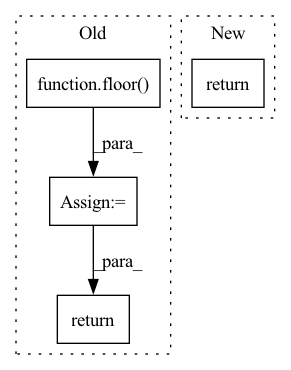

Pattern ID :41645

Before Change
return vals
def _sf(self, x, n, p):
k = floor(x)
return special.bdtrc(k, n, p)
def _ppf(self, q, n, p):
vals = ceil(special.bdtrik(q, n, p))
After Change
return _boost._binom_cdf(x, n, p)
def _sf(self, x, n, p):
return _boost._binom_sf(x, n, p)
def _isf(self, x, n, p):
return _boost._binom_isf(x, n, p)
In pattern: SUPERPATTERN
Frequency: 3
Non-data size: 4
Instances
Fragment ID: 116933482
Project Name: scipy/scipy
Commit Name: 60f42dbd108f66eabf45909250432cc425e7e00f
Time: 2021-01-02
Author: nicholas.bgp@gmail.com
File Name: scipy/stats/_discrete_distns.py
M Class Name: binom_gen
N Class Name: binom_gen
M Method Name: _sf(4)
N Method Name: _sf(4)
M Parent Class: rv_discrete
N Parent Class: rv_discrete
M File Name: scipy/stats/_discrete_distns.py
N File Name: scipy/stats/_discrete_distns.py
M Start Line: 70
M End Line: 71
N Start Line: 68
N End Line: 68
'>
Before Change
return coeff + n*log(p) + special.xlog1py(x, -p)
def _cdf(self, x, n, p):
k = floor(x)
return special.betainc(n, k+1, p)
def _sf_skip(self, x, n, p):
// skip because special.nbdtrc doesn"t work for 0<n<1
After Change
return coeff + n*log(p) + special.xlog1py(x, -p)
def _cdf(self, x, n, p):
return _boost._nbinom_cdf(x, n, p)
def _sf(self, x, n, p):
return _boost._nbinom_sf(x, n, p)
'>
Fragment ID: 116933483
Project Name: scipy/scipy
Commit Name: 60f42dbd108f66eabf45909250432cc425e7e00f
Time: 2021-01-02
Author: nicholas.bgp@gmail.com
File Name: scipy/stats/_discrete_distns.py
M Class Name: nbinom_gen
N Class Name: nbinom_gen
M Method Name: _cdf(4)
N Method Name: _cdf(4)
M Parent Class: rv_discrete
N Parent Class: rv_discrete
M File Name: scipy/stats/_discrete_distns.py
N File Name: scipy/stats/_discrete_distns.py
M Start Line: 288
M End Line: 289
N Start Line: 287
N End Line: 287
'>
Before Change
return exp(self._logpmf(x, n, p))
def _cdf(self, x, n, p):
k = floor(x)
vals = special.bdtr(k, n, p)
return vals
def _sf(self, x, n, p):
k = floor(x)
After Change
return _boost._binom_pdf(x, n, p)
def _cdf(self, x, n, p):
return _boost._binom_cdf(x, n, p)
def _sf(self, x, n, p):
return _boost._binom_sf(x, n, p)
'>
Fragment ID: 116933484
Project Name: scipy/scipy
Commit Name: 60f42dbd108f66eabf45909250432cc425e7e00f
Time: 2021-01-02
Author: nicholas.bgp@gmail.com
File Name: scipy/stats/_discrete_distns.py
M Class Name: binom_gen
N Class Name: binom_gen
M Method Name: _cdf(4)
N Method Name: _cdf(4)
M Parent Class: rv_discrete
N Parent Class: rv_discrete
M File Name: scipy/stats/_discrete_distns.py
N File Name: scipy/stats/_discrete_distns.py
M Start Line: 65
M End Line: 67
N Start Line: 65
N End Line: 65